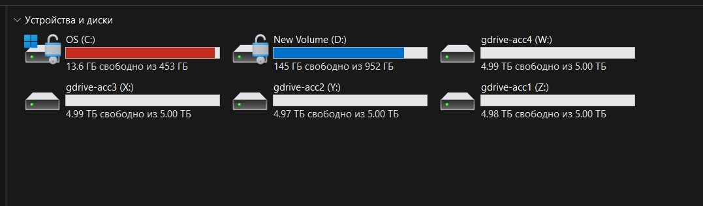
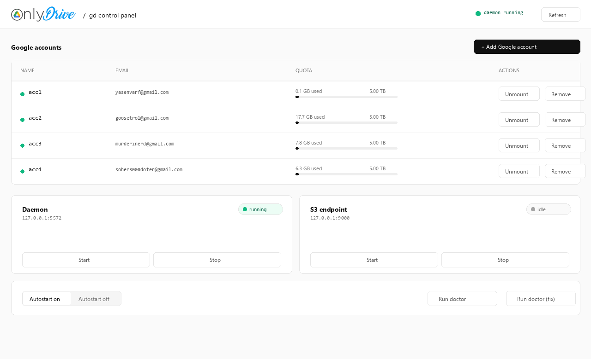
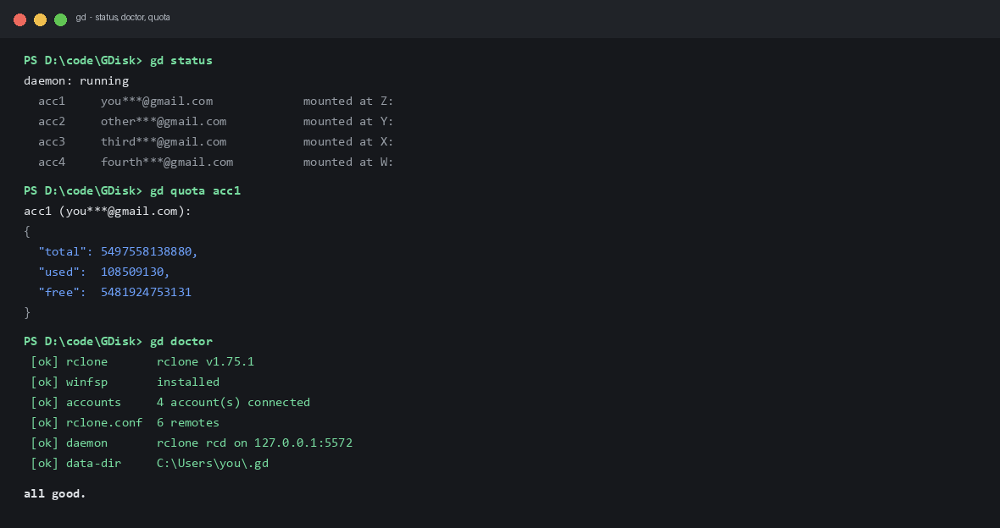

Every Google account, one honest pool of disks.
OnlyDrive mounts each Google account as a real Windows drive, folds them into one storage pool, exposes an S3-compatible endpoint on localhost, and gives AI agents file tools over MCP. Your regular Google subscription: no Google Cloud project, no API keys.
irm https://raw.githubusercontent.com/yava-code/OnlyDrive/main/install/install.ps1 | iex
This machine, right now.
No staged numbers: every figure below is read from the running daemon and the live API on the developer's machine while writing this page.



Four surfaces, one binary.
Windows drives straight from Google.
Each account mounts through WinFsp as a lettered drive. Files open in Explorer, copy with drag and drop, and survive reboots: autostart re-mounts everything at login, falling back from schtasks to the per-user Run key when schtasks refuses.
One union over all accounts.
gd serve union folds every account into a single namespace. New files land on the drive that has room. With one account the pool repeats it, because rclone's union rejects a lone upstream.
localhost:9000, any S3 client.
gd serve s3 publishes the pool over an S3-compatible API with generated access keys. Point aws-cli, s3cmd, MinIO client or DuckDB at it and treat the pool like a bucket.
aws --endpoint-url http://127.0.0.1:9000 \ s3 cp backup.tar s3://gd-union/backup.tar
AI agents get 12 tools.
OnlyDrive is itself an MCP server over stdio. Register it once and Claude Desktop, Cursor, Claude Code, Windsurf or VS Code can work with the pool directly.
gd ui, the human layer.
A localhost page on port 5590: accounts with quota meters, mount and remove buttons, daemon and S3 start/stop, autostart toggle, doctor with auto-fix. Set GD_UI_TOKEN to require an access token.
20 TB behind four letters.
Snapshot of the developer's setup: four personal Google accounts, each mounted and pooled. Usage numbers are live from the daemon at the time of writing.
Accounts
Three commands to disks.
One line, then a wizard.
irm https://raw.githubusercontent.com/yava-code/OnlyDrive/main/install/install.ps1 | iex
The installer drops gd.exe on your PATH and starts the guided setup: engine, Google sign-in (it asks how many accounts you want), disks, MCP, autostart. WinFsp install asks one UAC click.
Go toolchain is enough.
git clone https://github.com/yava-code/OnlyDrive.git cd OnlyDrive go build -o gd.exe ./cmd/gd go build -o gd-ui.exe ./cmd/gd-gui
Then run gd with no arguments: the same wizard walks you through everything.
The commands you will actually type.
gd add :: connect another account gd mount :: disk in Explorer gd serve s3 :: S3 on 127.0.0.1:9000 gd ui :: browser panel gd doctor :: is everything ok?
Honest answers.
Do I need a Google Cloud project or API keys?
No. OnlyDrive uses rclone's built-in OAuth client: a browser window opens, you sign in, you click Allow. The token lands in a local config that never leaves the machine. One caveat, stated plainly: rclone retires that shared client_id during 2026. Bringing your own is supported: gd oauth set <client_id> <client_secret> stores it and gd reauth acc1 moves each account over; the shared client keeps working until rclone retires it (2026).
Can I run a database on the mounted disk?
No, and any tool that promises otherwise is lying. Google Drive is not a block device: random writes go through a cache, so live SQLite or similar databases will corrupt eventually. Store documents, archives, media, backups. Keep databases on real disks.
What are the actual limits?
Google caps uploads at about 750 GB per day per account. Mount performance follows your connection: it is a network filesystem, not an SSD. Files are stored as Google Drive files, encrypted in transit by TLS but not client-side encrypted by OnlyDrive today.
How do AI agents connect?
Register the MCP server once (gd mcp install claude-desktop, or cursor, claude-code, windsurf, vscode) and restart the client. The agent then lists, reads, writes, moves and searches the pool through the daemon, no mount required. Mounts exist for humans who like Explorer.
Where do the tokens live, and who can read them?
In ~/.gd/rclone.conf, next to gd's state in ~/.gd/gd.json. The control panel binds to 127.0.0.1 only and is off by default until you run gd ui; set GD_UI_TOKEN to require a header token. Never commit or share the config: it is the keys to your drives.
Mount your accounts in under a minute.
Free, open source, Apache-2.0. Windows builds today; macOS and Linux builds ship in the release, mounting there is the next milestone.